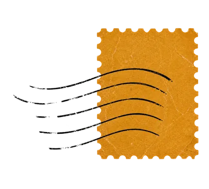
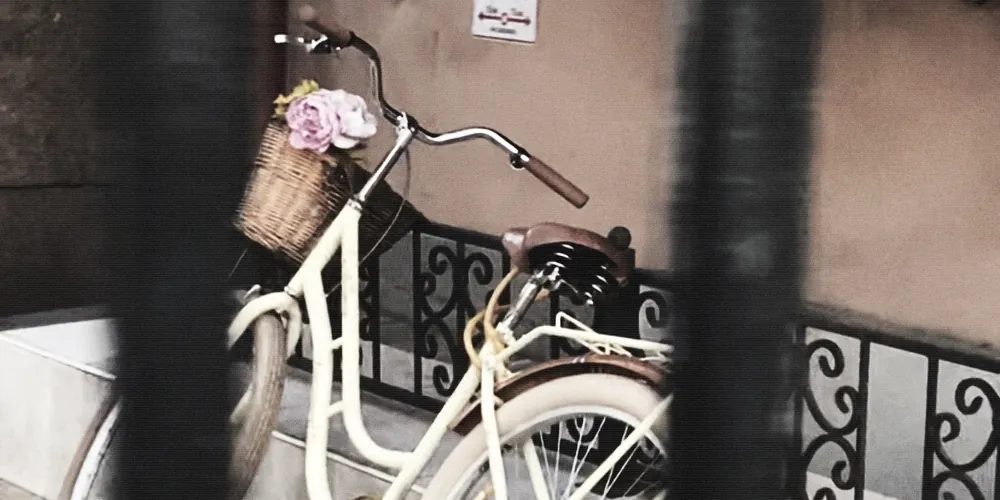
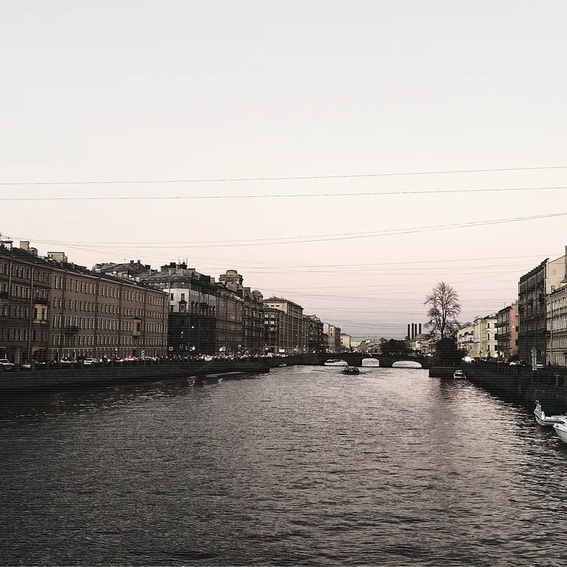

пункты выдачи
wildberries
ул. вавиловых 9к5, санкт-петербург
ozon
ул. вавиловых 9к5, санкт-петербург
получатель - юлия с., телефон или личный адрес можно узнать в личке
лия - 27
вишлист
санкт-петербург
15.11
(1) о списке
впервые за долгое время я буду праздновать свой день рождения в россии, поэтому решила собрать вишлист — мне захотелось получить подарки не только в виде переводов на карту, а ещё и в виде чего-то осязаемого, выбранного и подаренного вами. день рождения для меня — один из самых любимых и важных праздников. сейчас я многое узнаю о себе, своих желаниях и предпочтениях, и мне интересно делиться этим с вами. я немного привереда и контролёр, поэтому мне спокойнее заранее знать, что подарки мне действительно понравятся ахах. но сам вишлист для меня — не столько список вещей, сколько повод чуть больше сосредоточиться на себе и своих желаниях. а заодно — помочь вам меня порадовать ♡ при этом никаких обязательств: я рада любому вниманию, поздравлениям, денежкам и просто тому, что вы есть в моей жизни.


подсказкакак это работает

если что-то не получится, можешь спросить у меня в лс (ниже будет контакт) или у моей юли (если у тебя есть ее контакт)
(2) подарки
если вам не откликнулся ни один из вариантов — это совершенно нормально ♡ можно оставить денежку по реквизитам ниже, если вам так удобнее, но это тоже совсем не обязательно. а можно просто отправить мне открытку в личные сообщения — я буду рада любому знаку внимания и тёплым словам.
(3) контакты
если что-то непонятно — пишите в тг
wildberries
ул. вавиловых 9к5, санкт-петербург
ozon
ул. вавиловых 9к5, санкт-петербург
получатель - юлия с., телефон или личный адрес можно узнать в личке
чтобы вступить, нужно отправить заявку, но я там рассказываю подробно о себе и своей любви к жизни, расскажу и про подарки, наверное